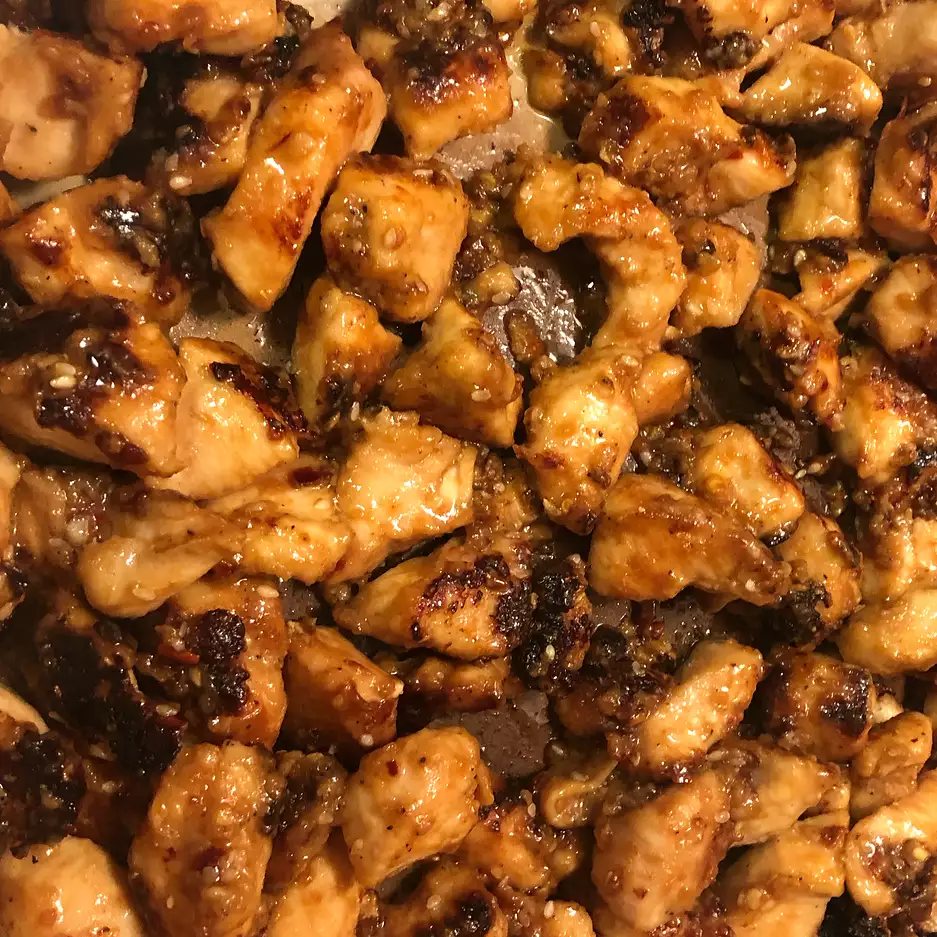

Sesame Chicken

Description
Sauteed Sesame Chicken recipe
Ingredients
- 4 large chicken breast halves
- 1 teaspoon salt
- 1 teaspoon ground black pepper
- 2 tablespoons all-purpose flour
- 1 teaspoon red pepper flakes
- 1 teaspoon garlic powder
- ½ teaspoon onion powder
- 3 tablespoons low-sodium soy sauce
- 2 tablespoons sesame oil
- 2 teaspoons honey (Optional)
- 1 tablespoon olive oil
Steps
- Cut chicken breasts into 1 1/2-inch slices about 1/4-inch thick. Season with salt and pepper. Combine flour, red pepper flakes, garlic powder, and onion powder in a large bowl. Add chicken and toss well. Add soy sauce, sesame oil, and honey; stir to coat
- Heat olive oil in a skillet over medium-high heat. Add chicken and cook, stirring occasionally, until golden brown and juices run clear, 10 to 15 minutes.